| 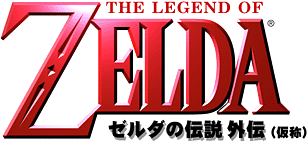 |
 1999 NINTENDO 1999 NINTENDO |
| 2000年3月発売予定 ●メモリー拡張パック専用 ●振動パック対応 |
| 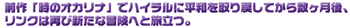 | |
| 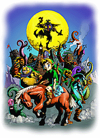 | ある日、リンクは深い森の中で、まがまがしくも奇妙なお面をかぶった一人のスタルキッドに出会った。スタルキッドは、リンクの乗っていた愛馬のエポナを奪い、歪んだ空間の扉の奥へと去っていった。それを追って扉の向こうへ入ったリンクが見たのは・・・どこかで見たような奇妙な世界。どこかで見たような人々が暮らしている。でも、ひとつ確かに違うのは、空に巨大な月が在り、ゆっくりとこの世界を目がけ落ちてきていること。 「あと数日で、この世は終わる・・・」 そこに住む人々はそう語る。じっとしていても、時間は無情に過ぎてゆくばかり。“あの、奇妙なお面のスタルキッド。あいつを見つければ解決の糸口が見つかるかもしれない。”リンクは月の落下を阻止するため、そして元の世界へと戻るため、新たな冒険の旅に出る。 |
| 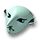 |
| 前作の数ヶ月後から始まるストーリー。しかしその世界は、あのハイラルと似ているようでいて全然似ていない、奇妙なパラレルワールド。 | 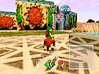 |
| 新しい冒険、新しい人々との出会い。さらに前作に登場したなつかしい人々も、リンクの知っている彼らとはどこか違った形で登場し、何かがおかしい奇妙な世界に君を誘う。 | |
| 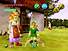 あっ、この人はどこかで・・ |
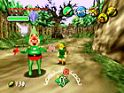 誰だ？こいつ・・。 |
 |
| この世界を象徴するかのように存在する「お面」。リンクはお面をかぶることで、ゴロン、ゾーラ、デクナッツなどのキャラクターに変身することもできるようだが・・・？ |
| 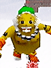 | 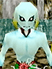 | 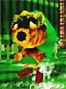 |
| 変身後のキャラクターには、それぞれに違った特殊能力がある。その特徴を生かして冒険を進めていくことが必要となるだろう。 |
| 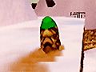 丸くなって転がるゴロン |
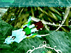 水中はゾーラの独壇場 |
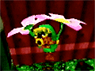 花で空を飛ぶデクナッツ |
| 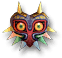 |
| この世界が滅亡してしまうまで、残された時間はあとわずか。巨大な時計塔が容赦なく時を刻んでゆく。限られた時間の中でリンクはこの世界を救うことが出来るのだろうか？ | 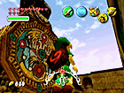 |
| 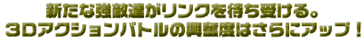 | ||
| 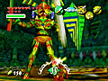 | 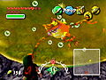 | 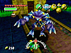 |
| ※画面は全て開発中のものです。 | ||